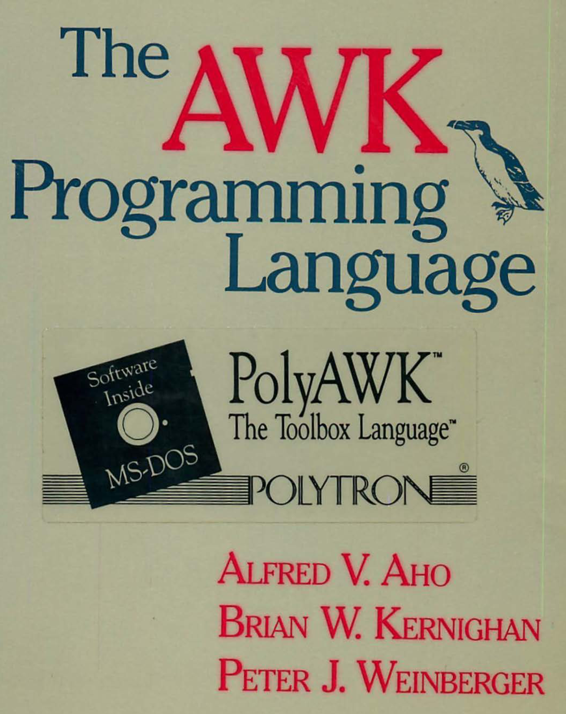

Lisp Project of the Day
clawk
You can support this project by donating at:


clawk
| Documentation | 🥺 |
| Docstrings | 🥺 |
| Tests | 🥺 |
| Examples | 😀 |
| RepositoryActivity | 🥺 |
| CI | 🥺 |
This library provides a DSL for text processing in a way as AWK does. For those who aren't familiar with it, AWK is a language for text processing.
AWK reads lines, splits them into the fields and applies some pattern-matching to them.
CLAWK allows forOB solving similar tasks in Lisp.
It does not have documentation but there are some examples, based on examples from this AWK book from 1988:

All examples use file emp.data as an input:
Beth 4.00 0
Dan 3.75 0
Kathy 4.00 10
Mark 5.00 20
Mary 5.50 22
Suzie 4.25 18An example I want to show you is equivalent to:
$ awk '$3 > 0 {print $1, $2 * $3}' emp.data
Kathy 40
Mark 100
Mary 121
Suzie 76.5It counts the salary for each employee.
Here is Common Lisp version which uses CLAWK:
POFTHEDAY> (for-file-lines ("docs/media/0060/emp.data")
(with-fields ((name payrate hours))
(when ($> hours 0)
($print name ($* payrate hours)))))
Kathy 40.0
Mark 100.0
Mary 121.0
Suzie 76.5This code is more semantic because we used named fields. However, you can use $1, $2, $3 if you with as well.
Above example is expanded into such code:
(with-open-file (#:g1 "docs/media/0060/emp.data"
:direction :input
:element-type 'character
:if-does-not-exist :error)
(let ((#:g1 #:g1))
(when (eq #:g1 't)
(setq #:g1 *standard-input*))
(unless (null #:g1)
(let ((*curfile* nil)
(*curline* "")
(*fnr* -1))
(macrolet ((clawk::next ()
'(throw #:g2)))
(prog (#:g4)
#:g2
(setq #:g4 (read-line #:g1 nil :eof))
(unless (eq #:g4 :eof)
(setq *curline* #:g4
$0 #:g4)
(incf *nr*)
(incf *fnr*)
(catch '#:g2
(let* ((#:g3 (split nil (clawk::fs)))
(*nf* (length #:g3)))
(declare (special *nf*))
(destructuring-bind
(name payrate hours)
#:g3
(when ($> hours 0)
($print name ($* payrate hours))))))
(go #:g2))))))))This code reads and parses the file, tracks some variables like row number, fields count and more. And calls your code to further processing.
You can find more examples in this file:
https://github.com/sharplispers/clawk/blob/master/clawktest.lisp
For me, CLAWK seems a nice tool to process files line by line from Common Lisp.
Brought to you by 40Ants under